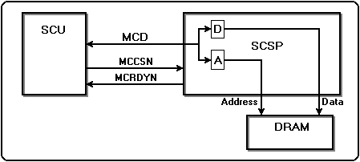
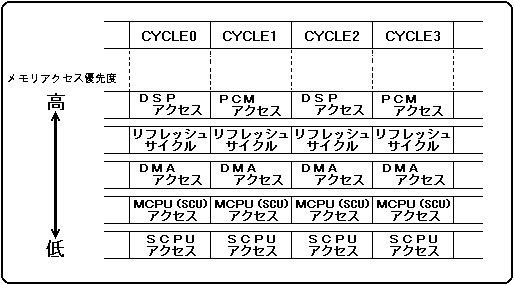

★HARDWARE Manual
★SCSPユーザーズマニュアル
★HARDWARE Manual
★SCSPユーザーズマニュアル
▲戻る
｜ 進む▼
SCSPユーザーズマニュアル
第3章 SCSP機能
■3.1 インタフェース
- SCSPは、2つのCPU(メインCPUとサウンドCPU)インタフェースを内蔵しています。
優先順位は、メインCPUインタフェースの方が高くなっていますので、サウンドCPUの処理速度はメインCPUの動作に依存します。
- ●サウンドCPUインタフェース
- サウンドCPUインタフェースとは、サウンドCPUを接続できるように機能を特化したブロックです。このインタフェースを設けることで、特に外部回路無しにサウンドCPUをSCSPに接続することができます。
サウンドCPUのプログラムは、サウンドメモリ内に存在します。このためCPUのプログラムは、全てサウンドCPUのアドレス空間に置かれていることになります。
- ●メインCPUインタフェース
- メインCPUとのインタフェース間のアクセスを、図3.1に示します。
図3.1 アクセス概要

- メインCPUからのセレクト信号(MCCSN)立ち下がりでインタフェースを開始し、セレクト信号立ち上がりでインタフェースを終了します。
また、メインCPUへのレディ信号（MCRDYN）に"1"を出力すると、メインCPUからのセレクト信号（MCCSN）と、メインCPUのデータバス（MCD[7:0]）は変化しません。
- ●メインCPUとのインタフェースを行なう際の注意事項
- 16ビット単位(ワード単位)で読み書きを行ってください。
→メインCPUからは、8ビット単位(バイト単位)のアクセスはできません。
- 読み書きの要求があるとSCSP内のバッファにアドレスとデータを取り込みます。
それにより、メインCPUへのレディ信号(MCRDYN)に"1"が 出力されウェイトが発生します。
このウェイトは、LSI内部の処理が終了するまで続くので、ウェイトの多発を及ぼす連続書き込みは、電源投入時を除いて極力使用しないでください。
- 電源投入時、連続書き込みによるサウンドメモリの初期化に要する時間は、4MビットDRAMで約100msecです。
■3.2 メモリアクセス制御
- SCSPからサウンドメモリに対しアクセスする際、次のような優先順位を保っています。
PCM音源によるPCMデータリード、DSPによるアクセス
DRAMリフレッシュサイクル
DMA転送
メインCPUによるアクセス
サウンドCPUによるアクセス
- 優先順位の高いアクセス要求がある場合は、優先順位の低いアクセス要求に対してウェイトが入ります。
また、メモリアクセスを要求しているデバイス(PCM音源部、DSP部、メインCPU、サウンドCPU、DMA等)に対し、どのデバイスメモリアクセスを許可するかという判断は、
実際にメモリアクセスが行なわれるよりも前に行なわれていますので、順位の低いアクセス要求を実行中に、順位の高いアクセス要求が発生することはありません。
図3.2 メモリアクセス優先度

- SCSP・サウンドCPUのパフォーマンスは、メモリサイクルの配分により決定されます。
メモリサイクルは、1サンプル間(1 / 44.1K≒22.68μsec)に128回行われ、この128回を各デバイスに振り分けます。
CPUアクセス回数はアプリケーションにより変動するので、メモリアクセスを行う上で最良の方法はありませんが、以下の事項について注意してください。
- ●メモリアクセス上の注意事項
- サウンドメモリはDRAM使用するので、リフレッシュサイクルが必要です。
サターンサウンドシステムでは1サンプル間に2回の空きサイクルが必要なので、その他のデバイスが使用可能なメモリサイクル数は、126回となります。
- 音源およびDSPのメモリサイクルは、最優先のメモリサイクルを持っています。
- 音源は、1スロット発音につき2回のメモリサイクルを使用するので、最大32スロット分、計64回のメモリサイクルを使用します。
EGが最大減衰状態("3FFH")の時は、音源はメモリアクセスを行いません。音声を出力しないスロットはKEY_OFFを行ってください。
- DSPは、最大64回のメモリアクセスを行います。これはDSPのアプリケーションによって異なります。DSPで一時的にデータを格納したい時は、できるだけDSP内部のレジスタを使用してください。
- SCSP内蔵のDMAを使用している場合はサウンドCPUにかなりのウェイトが入るため、サウンドCPUの動作速度が落ちます。
▲戻る
｜ 進む▼
★HARDWARE Manual
★SCSPユーザーズマニュアル
Copyright SEGA ENTERPRISES, LTD., 1997